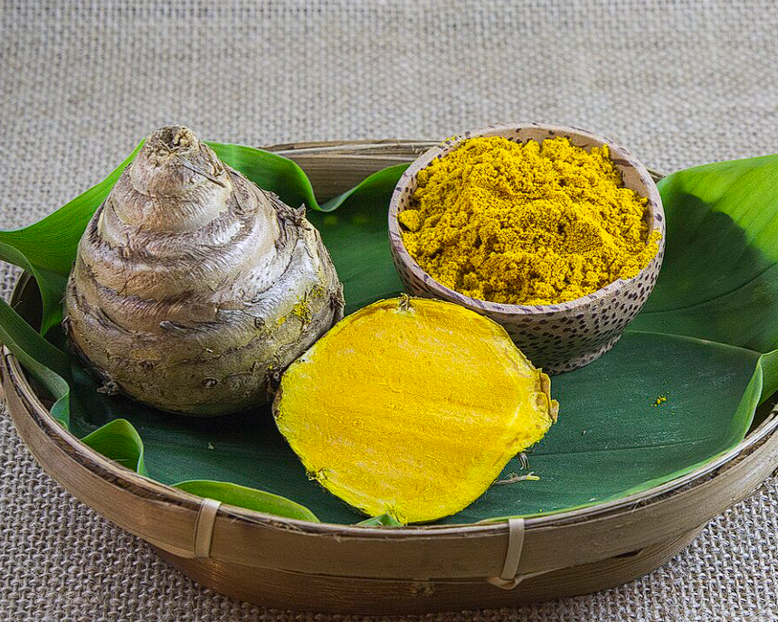

Deskripsi
Temulawak (Curcuma xanthorrhiza) adalah tanaman obat asli Indonesia yang memiliki rimpang besar dan kuning cerah. Biasanya digunakan dalam pengobatan tradisional dan jamu untuk memperkuat daya tahan tubuh dan meningkatkan fungsi hati.
Manfaat
- Menambah nafsu makan
- Menyehatkan organ hati
- Antibakteri dan antiradang
- Mengatasi gangguan pencernaan
Cara Penanaman
- Siapkan rimpang temulawak yang sudah bertunas.
- Tanam di tanah gembur dan subur, campur kompos.
- Tanam dengan kedalaman 6–8 cm dan siram rutin.
- Panen setelah 9–10 bulan.
Cara Pengolahan
- Dipotong lalu dikeringkan untuk jamu
- Dibuat menjadi ekstrak temulawak cair atau kapsul
- Dicampur dengan madu dan air hangat untuk ramuan herbal
Perhatian Penggunaan
Temulawak aman dalam jumlah sedang, namun konsumsi berlebihan bisa menyebabkan gangguan lambung. Konsultasikan dengan ahli herbal atau dokter bila dikonsumsi rutin.